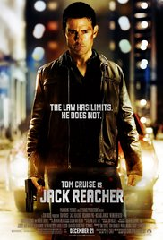

1- Harry Potter and the Deathly Hallows Part 2:
Genres: Adventure | Drama | Fantasy | Mystery. Release Date: 13 July 2011. Short description: Harry, Ron, and Hermione search for Voldemort's remaining Horcruxes in their effort to destroy the Dark Lord as the final battle rages on at Hogwarts.
2- The Lord of the Rings: The Return of the King: Genres: Adventure | Drama | Fantasy. Release Date: 22 January 2004. Short description: Gandalf and Aragorn lead the World of Men against Sauron's army to draw his gaze from Frodo and Sam as they approach Mount Doom with the One Ring.
3- Jack Reacher: Genres: Action | Crime | Mystery | Thriller. Release Date: 10 January 2013. Short description: In an innocent heartland city, five are shot dead by an expert sniper. The police quickly identify and arrest the culprit, and build a slam-dunk case. But instead of confessing, the accused man writes the words, "Get Jack Reacher." Reacher himself sees the news report and turns up in the city. The defense is immensely relieved, but Reacher has come to bury the guy. Shocked at the accused's request, Reacher sets out to confirm for himself the absolute certainty of the man's guilt, but comes up with more than he bargained for.
4- Pirates of the Caribbean: Dead Men Tell No Tales.: Genres: Action | Adventure | Fantasy. Release Date: 25 May 2017. Short description: Captain Jack Sparrow finds the winds of ill-fortune blowing even more strongly when deadly ghost pirates led by his old nemesis, the terrifying Captain Salazar, escape from the Devil's Triangle, determined to kill every pirate at sea...including him. Captain Jack's only hope of survival lies in seeking out the legendary Trident of Poseidon, a powerful artifact that bestows upon its possessor total control over the seas.
 HOME!
HOME!